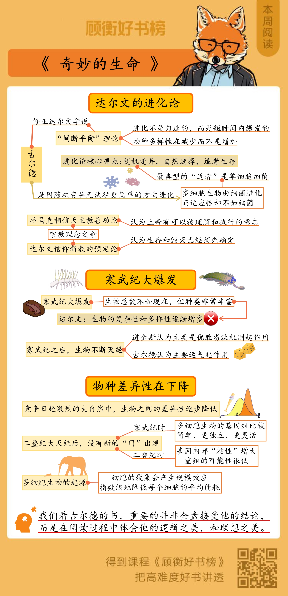

奇妙的生命
古尔德1972年提出间断平衡理论，对达尔文进化论做了两条重要的修正。
古尔德以加拿大伯吉斯化石为证据，讨论了两个问题：
一是寒武纪大爆发，产生了非常丰富的物种。而在寒武纪大爆发之后，物种之间的差异性在不断地下降；第二个问题，是关于生物灭绝的原因的。道金斯认为起决定作用的是优胜劣汰的机制，古尔德则认为是运气。
在竞争日趋激烈的大自然中，生物之间差异性随之降低了，就像越是高水平的比赛，球员之间的差距就越小。
- 生命的历程不是匀速的，原核生物存在了25亿年，然后在7亿年前才有了真核生物， 5亿年前才有了多细胞生物；
- 从总的历程来看，生命确实呈现出越来越高级、越来越复杂的倾向。但进步并不是进化固有的倾向。进化只意味着对环境的适应，而不是越来越高级、越来越复杂；
- 生物的差异性，在寒武纪时达到最高点，然后逐渐衰落。这符合观察得来的事实，也符合我们对复杂系统日益加深的理解。
